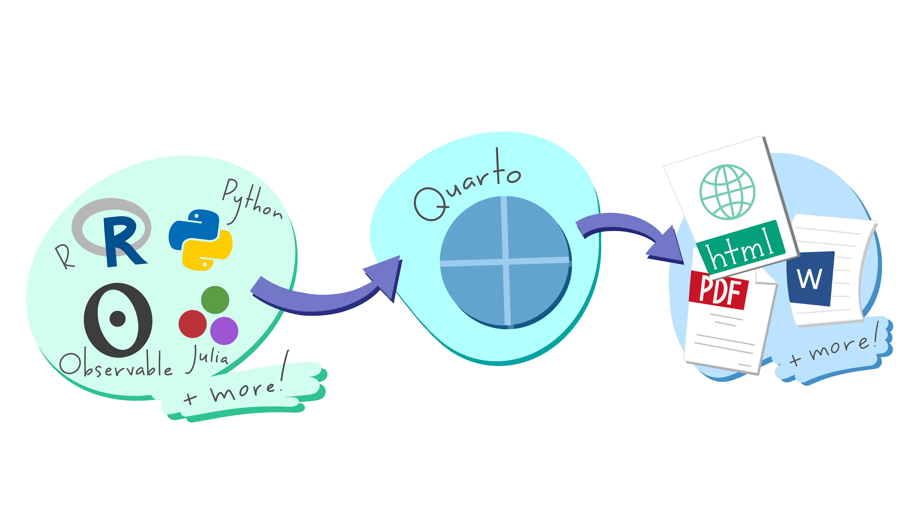
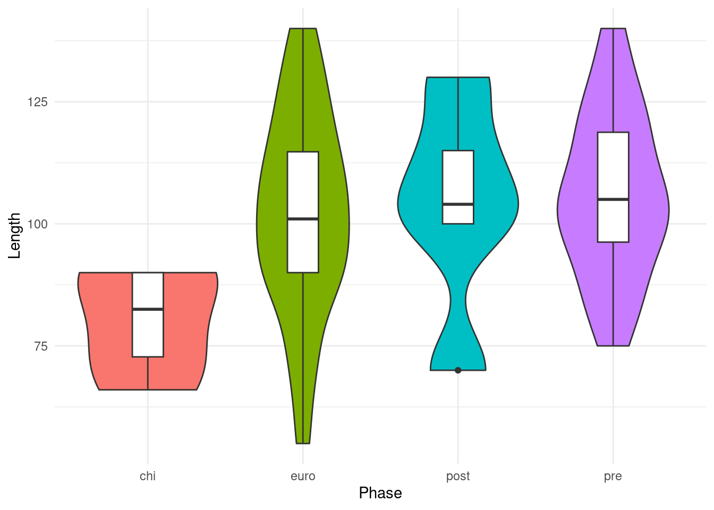

```{r}
# R code goes in between the fences ```
```Communicating Results with Quarto
Prerequisites
Knowledge
Core + Visualising data
Objects
Project organisation + Data cleaning
An important part of the data analysis is communicating our findings effectively. A common way is to manually add figures and tables to a Word or LaTeX document and write up the results. This can be tedious, especially if you find an error in your data and/or analysis; then the figures may need to be changed and possibly all of the values in the tables.

Quarto is a software that allows you to combine code, code output, and text within a single document, that can be dynamically rendered to various output formats (including HTML, PDF, and DOCX).
Creating a Quarto document
File > New File > Quarto Document…
Create Empty Document.
Save it as report.qmd in the folder called docs.
At the beginning of the document, before any code or text, we need to specify our document markup with a YAML (YAML Ain’t Markup Language) header. The YAML header is contained using two sets of three hyphens:
---
YAML header
---Here we can specify document metadata, such as title, author, and date.
---
title: Symbolic Material Culture within an Ancient Catastrophic Temple Complex
author: Dr. Henry Walton Jones Jr.
date: 1984
---Adding content
We can start adding text below the YAML header. Text is added using Markdown, a popular, cross-platform markup language. RStudio has a visual editor where you can add formatting in much the same way as a word processor (e.g. Word), but I think it’s important to see the conversion from Markdown to rendered document.
To create a headers we use the pound symbol, #.
# Title
## Section
### Subsection
#### Subsubsection
##### etc.Which becomes…
Title
Section
Subsection
Subsubsection
etc.
Since we already specified a title in the YAML header there is no need to include another one.
---
title: This is a Title
---is equivalent to
# This is a TitleThe next logical section would be an introduction.
## Introduction
This is a totally made-up study on a completely fictional archaeological site,
but the data are very real.We can add some markup to determine how the text will eventually be rendered. To italicise a word, surround the word in single *asterisks*. To bold a word, surround it in double **asterisks**. To do both, add triples to the ***word***, then people will know you REALLY mean business!
## Introduction
This is a totally made-up study on a completely fictional archaeological site,
but the data are very real.
It is ***VERY*** important to state that **any**
conclusions reached in this article are the ramblings of a *fictional*
archaeologist.This is a totally made-up study on a completely fictional archaeological site, but the data are very real. It is VERY important to state that any conclusions reached in this article are the ramblings of a fictional archaeologist.
When you start a new line in markdown, it will not start a new line in the rendered document. To insert a linebreak, there should be two spaces after the last word.
This is a totally made-up study on a completely fictional archaeological site,
but the data are very real.
It is ***VERY*** important to state that **any**
conclusions reached in this article are the ramblings of a *fictional*
archaeologist.This is a totally made-up study on a completely fictional archaeological site, but the data are very real.
It is VERY important to state that any conclusions reached in this article are the ramblings of a fictional archaeologist.
Creating a paragraph is the same as you would normally do it in a word processor.
This is a totally made-up study on a completely fictional archaeological site,
but the data are very real.
It is ***VERY*** important to state that **any**
conclusions reached in this article are the ramblings of a *fictional*
archaeologist.This is a totally made-up study on a completely fictional archaeological site, but the data are very real.
It is VERY important to state that any conclusions reached in this article are the ramblings of a fictional archaeologist.
Now we need a Materials section. We can create a list using the hyphen, -. There should be a horizontal space between the hyphen and list item.
## Materials
Here is a list of materials that were used during excavation.
- Whip
- Hat
- Gun- Whip
- Hat
- Gun
Lists can also have nested items with two horizontal spaces. You can choose between the hyphen, -, the plus symbol, +, and the asterisk, * when creating a list. There is no difference between them. I like to use alternating symbols for nested lists because makes clear which items are on the same level and increases human readability.
- Whip
+ for carefully excavating ancient material
- Hat
+ for protection against the hot sun
- Gun
+ to keep away dig-site cats- Whip
- for carefully excavating ancient material
- Hat
- for protection against the hot sun
- Gun
- to keep away dig-site cats
And they can be ranked
1. Whip
i) for carefully excavating ancient material
2. Hat
i) for protection against the hot sun
3. Gun
i) to keep detailed field notes
a. can you tell I'm being sarcastic?- Whip
- for carefully excavating ancient material
- Hat
- for protection against the hot sun
- Gun
- to keep detailed field notes
- can you tell I’m being sarcastic?
- to keep detailed field notes
Warning
Lists in Quarto require a blank line between the list and any other text. Otherwise it will be rendered in the form of regular text instead of a list.
A methods section is an important place to mention that you are using R!
## Methods
I recently learned how to use R and couldn't wait to use it in this study! I
am using R version X.Y (YYYY-MM-DD).Methods
I recently learned how to use R and couldn’t wait to use it in this study! I am using R version X.Y (YYYY-MM-DD).
In-line code
Instead of finding the version and typing it out, we can take advantage of one of the benefits of Quarto (and other similar software): the ability to combine text and code output in a single document. We can get the R version using the built-in version object in R. It is a list with various information about the R version you are currently using.
Inline code not rendering
If your inline R code isn’t renderingm you may need to add engine: knitr to the YAML header.
## Methods
I recently learned how to use R and couldn't wait to use it in this study! I
am using R version 4.4.2 (2024-10-31).Methods
I recently learned about the R programming language and couldn’t wait to use it in this study! I am using R version 4.4.2 (2024-10-31).
When you render the document, the version will always show whatever version you were using when you rendered the document. This can also be used to display statistics, which we will see later.
Finally to the fun part. The results! Here we can really show the benefit of combining code and output in a single document.
Tables
It’s possible to create a table in Markdown using the pipe |, but it’s tedious and is only realistic for small tables where you don’t need to rely on code.
| Column 1 | Column 2 | Column 3 |
|----|----|----|
| Item | Another item | A third item || Column 1 | Column 2 | Column 3 |
|---|---|---|
| Item | Another item | A third item |
To use R code to create a table, we first need to make sure we have access to the necessary data and packages. Quarto documents are self-contained and do not/cannot rely on anything from the Global Environment, so we need to include these.
Code can be added in ‘code chunks’ within the document.
The syntax for code chunks is
If we want to run R code we need to specify that.
Here we can write R code the same way we would in an R script. We can use a code chunk to load the necessary packages and data.
library(tidyverse)
library(here)
mortuary_data <- read_csv(here("data/mortuary_data.csv"))
File paths from Quarto document
Unlike R scripts where the file path is relative to the project root, file paths in a Quarto document are relative to the document itself. We need the here package to make sure our file paths are relative to the root of the project.
We can now use the data to create our table. Let’s summarise() the average area of the burials by phase. We’ll also throw in a standard deviation and arrange from high to low.
mortuary_data |>
mutate(Area = Length * Width) |>
group_by(Phase) |>
summarise(
mean = mean(Area, na.rm = T),
sd = sd(Area, na.rm = T)
) |>
arrange(desc(mean))# A tibble: 6 × 3
Phase mean sd
<chr> <dbl> <dbl>
1 post 6820 2335.
2 disturbed 6656. 923.
3 pre 6383. 1625.
4 euro 6288. 2053.
5 <NA> 4666. 2565.
6 chi 3772. 1239.Render the document and you will see some problems. First of all, the table is pretty ugly. Second, the code is visible, which is of course great for reproducibility, but I don’t think the journals have the same appreciation for this. The code chunks can also get pretty long and would clog up the rendered document.
To control the code chunks we can set the chunk options. This can be done in the YAML header as well as the individual code chunks.
To hide all code chunks in the document, we will add the option echo: falseto the YAML header under the execute argument.
---
title: Symbolic Material Culture within an Ancient Catastrophic Temple Complex
author: Dr. Henry Walton Jones Jr.
date: 1984
execute:
echo: false
---
Caution
Unlike R, YAML is very sensitive to spaces. There should be exactly one space between the colon and the value, e.g., date: 1984. When there is a sub-argument, e.g.,
execute:
echo: falseThe sub-argument should be indented exactly two spaces.
That only solved part of the problem for the first code chunk. It’s still displaying the code output. We need to hide both the code and the output. We can override the document option of echo: false by specifying the option in the code chunk. This is done at the top of the code with a hash-pipe, #|. The option to hide both the code chunk and output is include: false.
It’s also good practice to label chunks using #| label:.
#| label: setup
#| include: false
library(tidyverse)
library(here)
mortuary_data <- read_csv(here("data/mortuary_data.csv"))Again, it’s important that there is one space between the hash-pipe and the option, and another one space between the option and value.
One more problem to solve. To make the table look nicer we’ll use the knitr package; specifically the kable() function.
knitr
You may not have realised but we have been using knitr to render our Quarto document to HTML. It’s working behind the scenes to make sure everything looks good!
```{r}
mortuary_data |>
group_by(Phase) |>
summarise(
mean = mean(Length, na.rm = T),
sd = sd(Length, na.rm = T)
) |>
arrange(desc(mean)) |>
knitr::kable() # that's it. no need for arguments at the moment
```| Phase | mean | sd |
|---|---|---|
| disturbed | 119.3333 | 32.03644 |
| pre | 105.7692 | 16.79359 |
| post | 103.8000 | 22.18558 |
| euro | 102.3333 | 20.54937 |
| chi | 80.2500 | 11.84272 |
| NA | 78.8750 | 32.37059 |
Namespace
If you have a package installed, you don’t actually need to load it to access all the functions. You can use the ‘namespace’ to access the function, i.e., package::function.
Chunk options
| Option | Options | Output |
|---|---|---|
eval |
TRUE or FALSE |
Whether or not the code within the code chunk should be run. |
echo |
TRUE or FALSE |
Choose if you want to show your code chunk in the output document. echo = TRUE will show the code chunk. |
include |
TRUE or FALSE |
Choose if the output of a code chunk should be included in the document. FALSE means that your code will run, but will not show up in the document. |
warning |
TRUE or FALSE |
Whether or not you want your output document to display potential warning messages produced by your code. |
message |
TRUE or FALSE |
Whether or not you want your output document to display potential messages produced by your code. |
Figures
Let’s make a figure to supplement out table.
```{r}
mortuary_data |>
filter(Phase != "disturbed") |>
ggplot(aes(x = Phase, y = Length)) +
geom_violin(aes(fill = Phase)) +
geom_boxplot(width = 0.2) +
theme_minimal() +
theme(legend.position = "none")
```Warning: Removed 5 rows containing non-finite outside the scale range
(`stat_ydensity()`).Warning: Removed 5 rows containing non-finite outside the scale range
(`stat_boxplot()`).Recall that R will not allow the silent assassination of NAs. This is fine when we are working in the console or a script, but we don’t really want it showing up in our document. We can either suppress warnings in the code chunk with #| warning: false or at the document level (YAML header) by adding warnings: false under execute,
---
title: Symbolic Material Culture within an Ancient Catastrophic Temple Complex
author: Dr. Henry Walton Jones Jr.
date: 1984
execute:
echo: false
warning: false
---and the latter by adding to the chunk.
```{r}
#| warning: false
mortuary_data |>
filter(Phase != "disturbed") |>
ggplot(aes(x = Phase, y = Length)) +
geom_violin(aes(fill = Phase)) +
geom_boxplot(width = 0.2) +
theme_minimal() +
theme(legend.position = "none")
```
Cross-references
Let’s reference our table and figure. To do this we need to add labels to the code chunks that produce the table and figure. The prefix for all chunk labels that produce tables is tbl- and for figures it is fig-. When labelling chunks there are rules that apply. You can only use hyphens, - and alphanumeric characters, and the label must start with a letter, not a number.
```{r}
#| label: fig-length-box
#| warning: false
mortuary_data |>
filter(Phase != "disturbed") |>
ggplot(aes(x = Phase, y = Length)) +
geom_violin(aes(fill = Phase)) +
geom_boxplot(width = 0.2) +
theme_minimal() +
theme(legend.position = "none")
```

In addition to the label, tables also require a caption to be cross-referencable. This can be added with tbl-cap: "Caption here".
```{r}
#| label: tbl-length-phase
#| tbl-cap: "This is a table."
mortuary_data |>
group_by(Phase) |>
summarise(
mean = mean(Length, na.rm = T),
sd = sd(Length, na.rm = T)
) |>
arrange(desc(mean)) |>
knitr::kable() # that's it. no need for arguments at the moment
```| Phase | mean | sd |
|---|---|---|
| disturbed | 119.3333 | 32.03644 |
| pre | 105.7692 | 16.79359 |
| post | 103.8000 | 22.18558 |
| euro | 102.3333 | 20.54937 |
| chi | 80.2500 | 11.84272 |
| NA | 78.8750 | 32.37059 |
Now we can reference both of them in the text. The syntax for this is @ followed by the label, so in our case, @tbl-area-phase for the table and @fig-area-box.
As you can see in @tbl-length-phase and @fig-length-box, our study
produced results.Don’t want to call it Figure X or Table X? No problem. The figure and table prefixes can be changed in the YAML header.
---
...
crossref:
tbl-prefix: Tabelle
fig-prefix: Abbildung
---Other outputs
The output format can be modified in the YAML header. If, for some reason, we need the output to be docx or pdf, we can specify that.
---
...
format:
docx: default
pdf: default
---To be able to produce PDFs, we need to have a latex compiler installed. This can be done with the tinytex R package.
install.packages("tinytex")
tinytex::install_tinytex()